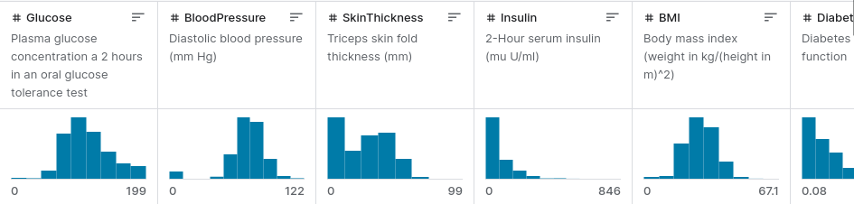

Welcome to Lab #10. This lab, we'll cover the basics of neural networks using TensorFlow and start working with word embeddings, which are an important foundation for deep learning based NLP.
Following are some sample scripts for last lab's questions:
Task #1 (Text Mining): part 1, part 2
The Perceptron, consisting of a single neuron, is the simplest form of a neural network capable of performing binary classifications. It serves as the essential building block for understanding more complex neural network architectures. Understanding how the Perceptron learns from data by adjusting its weights is crucial for all neural network (deep learning) architectures.
You can find a Perceptron implementation in scikit-learn, which is used like any other classifier you've worked with:
import numpy as np from sklearn.linear_model import Perceptron
Create the dataset for the AND function as mentioned in the worksheet:
dataset = np.array([[1,1,1],
[1,0,0],
[0,1,0],
[0,0,0],])
For our feature vectors, we need the first two columns:
X = dataset[:, 0:2]and for the training labels, we use the last column from the dataset:
y = dataset[:, 2](a) Now, create a Perceptron classifier and train it with the AND dataset using the fit function as you've done for other classifiers before.
(b) Apply the trained model to all training samples and print out the prediction. Did it learn all values correctly? You can look at the weights it learned with:print("Weights: ", perceptron_classifier.coef_)
And see the bias, here called intercept term, with:print("Bias: ", perceptron_classifier.intercept_)
Check what happens when you try to learn the XOR function.
TensorFlow, developed by the Google Brain team, is an open-source library for numerical computation and large-scale machine learning. It has become one of the most popular frameworks for deep learning due to its powerful and flexible ecosystem, which includes tools, libraries, and community resources that allow researchers and developers to build and deploy machine learning applications. TensorFlow's importance lies in its ability to handle large datasets and perform complex computations efficiently, making it a cornerstone for advancing the field of AI.
In this course, we'll be using TensorFlow to delve into more advanced neural network architectures, including deep learning models. While scikit-learn provides implementations for simpler feed-forward networks, TensorFlow offers a more extensive toolkit for building, training, and deploying complex models, making it an ideal choice for our exploration of deep learning.
If you followed last week's lab exercise on Rasa, you can use the same conda environment you created there for your new experiments, as TensorFlow is part of the Rasa environment.
conda activate rasa
Otherwise, to install TensorFlow in a new conda environment, you can do so by combining environment creation and package installation in a single command:
conda create --name tf tensorflow
This command not only creates a new conda environment named tf but also installs TensorFlow into it directly. After the environment is successfully created, you can activate it with:
conda activate tf
Now, your environment is ready, and you can start working with TensorFlow for your neural network projects.
Now you can run the first experiment shown in the lecture, using the Pima Indians Diabetes Dataset, a widely used benchmark dataset in machine learning for binary classification tasks. It consists of medical diagnostic measurements from a group of Pima Indian women aged 21 and above, living near Phoenix, Arizona, USA. The dataset features 768 instances, each with 8 attributes that are considered relevant for predicting the onset of diabetes within five years. These attributes include the number of pregnancies, plasma glucose concentration, diastolic blood pressure, triceps skinfold thickness, 2-hour serum insulin, body mass index, diabetes pedigree function, and age.

The goal of our neural network model will be to use these features to accurately predict whether a patient has diabetes, which is indicated by a binary outcome variable in the dataset. This exercise provides a practical application of neural networks in healthcare, demonstrating their potential for supporting medical diagnostics. See this tutorial page for more explanations about this exercise.
Start by downloading the dataset (CSV file). You can then load it into your Python code with:
from numpy import loadtxt# load the datasetdataset = loadtxt('pima-indians-diabetes.data.csv', delimiter=',')# split into input (X) and output (y) variablesX = dataset[:,0:8]y = dataset[:,8]
You can now build the neural network as shown in the lecture. Note that we are using the Keras API for TensorFlow:
from keras.models import Sequentialfrom keras.layers import Dense
Keras is a high-level neural networks API, written in Python and capable of running on top of TensorFlow. It is designed to enable fast experimentation with deep neural networks, focusing on being user-friendly, modular, and extensible. By using Keras, we can easily build complex models like the one for this experiment with just a few lines of code.
We can now define the neural network architecture:# define the keras modelmodel = Sequential()model.add(Dense(12, input_dim=8, activation='relu'))model.add(Dense(8, activation='relu'))model.add(Dense(1, activation='sigmoid'))
This code defines a simple yet powerful neural network architecture using the Sequential model from Keras, which allows us to create models layer-by-layer. The first layer has 12 neurons and uses the ReLU (Rectified Linear Unit) activation function. It's designed to process the eight input features, which is defined through input_dim=8. Defining it as a Dense layer means that each neuron in this layer is connected to every neuron in the previous layer. Following this, we have another Dense layer with 8 neurons, also using ReLU, to further process the information. The final layer is also a dense layer with a single neuron and a sigmoid activation function, outputting a value between 0 and 1 to classify the instances into two categories: diabetic or not diabetic. This architecture aims to capture complex patterns in the dataset through its layers and neurons, illustrating the power of neural networks in classifying medical diagnostic data.
Next, we have to compile and train the network, so it can learn the correct weights:
# compile the keras modelmodel.compile(loss='binary_crossentropy', optimizer='adam', metrics=['accuracy'])
Compilation is a crucial step in preparing the model for training. It involves specifying the loss function and the optimizer. The loss function, here binary_crossentropy, is used for binary classification problems and measures the performance of the model during training, so we want to minimize it. The optimizer, here adam, is an algorithm that adjusts the weights to minimize the loss function. By including accuracy in the metrics, we tell the model to report the accuracy of the classification during the training process.
# fit the keras model on the datasetmodel.fit(X, y, epochs=150, batch_size=10)
The training process is initiated with the model.fit method, where the model learns to classify the data into diabetic or not diabetic by adjusting weights through the training dataset. The epochs=150 parameter tells Keras to pass the entire dataset through the neural network 150 times, which helps the model to better learn the patterns. The batch_size=10 parameter specifies that the data should be passed in small batches of 10 instances at a time, allowing for more efficient weight updates.
If you set up everything correctly, you should see training output like this:
Epoch 1/150 77/77 [==============================] - 1s 871us/step - loss: 18.3940 - accuracy: 0.4049 Epoch 2/150 77/77 [==============================] - 0s 883us/step - loss: 2.3262 - accuracy: 0.6120 Epoch 3/150 77/77 [==============================] - 0s 1ms/step - loss: 1.3631 - accuracy: 0.6016 Epoch 4/150 77/77 [==============================] - 0s 889us/step - loss: 1.0823 - accuracy: 0.5911 ...
The output shows the training process at each epoch, reporting the number of steps completed, the time each step took, and the loss and accuracy metrics for that step. Initially, the loss is quite high, and the accuracy may be low, but as the epochs progress, you should observe a decrease in loss and an increase in accuracy. This indicates that the model is learning from the data, improving its ability to classify the instances correctly.
Once training is completed, you can test the model with:
# evaluate the keras model_, accuracy = model.evaluate(X, y)print('Accuracy: %.2f' % (accuracy*100))
The model.evaluate function tests the trained model on the same dataset to measure its performance. This step is crucial for understanding how well the model has learned to classify instances based on the input data. The function returns the loss value and the metrics values for the model in test mode; in our case, we're interested in accuracy, which is why accuracy = model.evaluate(X, y) is used. The underscore '_' is used to ignore the loss value returned by evaluate, as our primary interest here is in the accuracy metric. Printing the accuracy shows us the percentage of the dataset that the model has correctly classified.
While we evaluate the model on the training dataset here for simplicity, it is essential to understand that this is not the proper methodology to use in practice: A more accurate evaluation involves testing the model on a separate dataset that it hasn't seen during the training phase. In a typical machine learning workflow, data is split into a training set and a testing set using a train/test split methodology. This can easily be accomplished in Keras with the help of the train_test_split function from the sklearn.model_selection module:
from sklearn.model_selection import train_test_splitX_train, X_test, y_train, y_test = train_test_split(X, y, test_size=0.2)
This code snippet will split the dataset into 80% training data and 20% testing data, allowing you to train the model on X_train and y_train and then evaluate its performance more accurately on X_test and y_test. Try repeating the training using the split dataset and compare the performance you now get on the test set!
TensorBoard is a powerful tool developed by TensorFlow to help visualize the training process of your neural networks. It allows you to monitor metrics like loss and accuracy in real-time, view the model architecture, and analyze the distributions of weights and biases.
To use TensorBoard with Keras, follow these steps:
Import the TensorBoard callback from Keras:
from keras.callbacks import TensorBoardCreate a TensorBoard callback, specifying the directory where logs will be saved:
tensorboard_callback = TensorBoard(log_dir='./logs', histogram_freq=1)Include this callback in your model's fit method:
model.fit(X, y, epochs=150, batch_size=10, callbacks=[tensorboard_callback])Launch TensorBoard by running the following command in your terminal (make sure you are in the directory that contains the logs folder):
tensorboard --logdir=logsOpen a web browser and go to http://localhost:6006 to view your training metrics and model details.
If the metrics do not seem to update in real-time, you may need to enable auto-refresh. To do this, look for the settings (gear icon) in the TensorBoard interface. Within the settings menu, find the option to enable "Reload data". This will allow TensorBoard to automatically update and display your training metrics as they are logged, providing a real-time view of your model's performance.
You can now build neural networks for various tasks, but so far, only for numerical data. To process natural language text, we need to be able to encode it in a suitable way for the network to process. As explained in the lecture, the most common way this is done for (deep learning) neural networks is using word embeddings. Here, we will first investigate how to work with word vectors in spaCy and then build a simple neural network using word embeddings.
Note: to be able to work with the existing spaCy models, you need a computer with sufficient RAM (at least 8GB for the "medium" and 12GB for the "large" models).
Make sure you understand the idea of word embeddings as discussed in the lecture. Here is a neat online tool (works best in Chrome) to visualize how Word2vec-type vectors are created using a neural network:
Word embeddings are a type of word representation that allows words to be represented as vectors in a continuous vector space. Unlike one-hot encoding, which represents each word as a separate dimension and is sparse, word embeddings place semantically similar words close together in the embedding space. This is achieved by training models on large text corpora, allowing these models to learn context and semantic similarities between words.
There are several methods to obtain word embeddings, with Word2Vec and GloVe being among the most popular. Word2Vec uses neural networks to learn word associations from large datasets, effectively capturing complex word relationships with a relatively simple architecture. GloVe, on the other hand, is based on word co-occurrence matrices and focuses on capturing global statistics of word occurrences to infer relationships.
Word embeddings are crucial for modern NLP applications because they provide a dense and efficient representation for words, capturing both semantic and syntactic meanings. This makes them highly effective for tasks such as text classification, sentiment analysis, and more, enabling neural networks to understand text in a more nuanced and human-like way.
The spaCy library has built-in support for word vectors. Assuming you installed spaCy for the previous lab, you will still need to download a larger language model, since the "small" English model we used in the previous lab does not include word vectors. You can download and install the medium-sized English model with:
python -m spacy download en_core_web_md
Afterwards, you should be able to see the similarity of words based on their word embeddings, using spaCy's built-in cosine similarity:
import spacy
nlp = spacy.load("en_core_web_md") # make sure to use larger model!
tokens = nlp("dog cat banana")
for token1 in tokens:
for token2 in tokens:
print(token1.text, token2.text, token1.similarity(token2))
For details on word vectors in spaCy, make sure you read the documentation.
A simple way to obtain a vector for a whole sentence (or even a document) is to simply average all the individual word vectors it contains. This is the result you get when you call, e.g.:
nlp('why is it still winter').vector
(you can compute the average yourself using a few words to verify). Note that, at this point, the vector is not an accurate semantic representation of the sentence anymore (for example, if it contains words like "good" and "bad", they will mostly cancel each other out). Nevertheless, you can use these vectors just like we previously used count or tf-idf vectors, for example, in a QA chatbot to find answer sentences by similarity to a question sentence, to make recommendations, or cluster documents (e.g., using k-means). A more sophisticated method to build document vectors is the Doc2vec method briefly mentioned in the lecture.
most_similar function provides an intuitive interface. This functionality is particularly useful for exploring semantic relationships between words. An example of computing analogies with Gensim offers practical insights into its application.Understanding word embeddings allows us to transition from processing numerical data in neural networks to handling natural language text. This leap is crucial for a wide array of applications in modern AI, from content categorization to chatbots. For educational reasons, we'll start with a minimal "hand-written" dataset here to focus on understanding how word vectors are processed in the network.
Our goal here is to classify incoming text as one of two classes, Technology or Food. This binary classification task mimics real-world scenarios where machine learning models automate and enhance decision-making processes based on textual data:
texts = [
'Google search engine',
'Apple mobile devices',
'delicious Pizza food',
'tasty Burger meal',
'Python programming language',
'Italian Pasta dish'
]
Training data labels are provided as follows, where '0' represents Technology texts, and '1' represents Food-related texts:
labels = [0, 0, 1, 1, 0, 1] # 0 for Technology, 1 for Food
In Task #2, we explored building neural networks for numerical classification tasks. Transitioning to natural language processing (NLP), we face the challenge of converting text into a format that a neural network can understand. This is where word vectors come into play. Unlike numerical data, text data requires a representation that captures the semantic properties of words in a high-dimensional space. Word vectors serve this purpose by providing dense numerical representations for each word.
For this task, we'll use the pre-trained GloVe word vectors available from Stanford NLP's GloVe page. GloVe (Global Vectors for Word Representation) is a type of word embedding that captures detailed semantic relationships between words by analyzing the co-occurrence patterns in a large text corpus. Here, we'll start with the smallest pre-trained model, glove.6B.50d.txt, which includes 400,000 50-dimensional word embeddings trained on 6 Billion tokens.
Here's how to load the word embeddings in Python:
embeddings_index = {}
with open('glove.6B.50d.txt', 'r', encoding='utf-8') as f:
for line in f:
values = line.split()
word = values[0]
vector = np.asarray(values[1:], dtype='float32')
embeddings_index[word] = vector
The code snippet above demonstrates how to load GloVe word embeddings into a Python dictionary. This enables the embeddings to be easily accessed programmatically when needed for text processing tasks. Here's a breakdown of what each line in the snippet does:
embeddings_index = {} initializes an empty dictionary where we will store each word and its corresponding vector from the GloVe dataset.with open('glove.6B.50d.txt', 'r', encoding='utf-8') as f: opens the GloVe file in read mode. The file contains pre-trained embeddings, with one word per line followed by its embedding vector. The encoding='utf-8' parameter ensures that the file is correctly read in UTF-8 encoding.for line in f: loop iterates over each line in the GloVe file.values = line.split() splits the line into individual components, with the first component being the word and the remaining components being the elements of the embedding vector.word = values[0] retrieves the first element of the line, which is the word itself.vector = np.asarray(values[1:], dtype='float32') converts the embedding vector components into a NumPy array of type float32, starting from the second element of the line (since Python indexing starts at 0, values[1:] means all elements after the first one).embeddings_index[word] = vector assigns the embedding vector to its corresponding word in the dictionary. This allows for quick retrieval of any word's embedding vector later in the process.By loading the embeddings into a dictionary, we can efficiently look up the vector for any word encountered in our text processing tasks, enabling us to convert text data into numerical form that the neural network can work with.
To prepare the input for the neural network, we average the word vectors of the input words in a text. This process transforms a variable-length text into a fixed-length vector, enabling the neural network to process it. Averaging word vectors condenses the entire text's information into a single vector that represents the text's overall semantic meaning.
This method recalls our earlier exercise with spaCy vectors, where we also converted sentences into single vectors by averaging. While effective for short texts or sentences, this approach might not preserve all semantic nuances in longer texts, as it does not account for word order or syntax. Averaging can dilute the context provided by individual words, especially when contradictory or complex phrases are present.
Despite its limitations, averaging word vectors is used here for simplicity and as an introduction to handling textual data in neural networks. In more advanced applications, especially with longer texts, alternatives like Doc2Vec offer a more sophisticated solution by learning document-level embeddings that capture more of the text's context. Alternatively, neural network architectures designed to handle sequences, such as RNNs or Transformers, can process texts word by word or token by token (we'll cover these in the next lab).
For this first exercise, however, we will stick to the simpler method of averaging word vectors, keeping in mind that as we progress, we'll explore more complex and nuanced approaches for text representation.
def get_average_vector(text):
words = text.split()
vectors = np.array([embeddings_index.get(word.lower(), np.zeros(50)) for word in words])
if len(vectors) == 0:
return np.zeros(50)
return np.mean(vectors, axis=0)
The function get_average_vector is designed to convert a piece of text into a single, fixed-length vector that represents the semantic essence of the text. Here's how it works:
words = text.split() splits the input text into individual words based on spaces. This allows us to process each word separately.embeddings_index.get(word.lower(), np.zeros(50)) attempts to retrieve the word's embedding vector from the embeddings_index dictionary. If the word is not found (which can happen for words not present in the GloVe vocabulary), a zero vector of the same dimensionality (50 in this case) is used as a placeholder.word.lower() ensures that the lookup in the embeddings dictionary is case-insensitive, helping to maximize the chance of finding a match for each word.np.array([...]) creates an array of vectors for all words in the text, and np.mean(vectors, axis=0) calculates the mean (or average) of these vectors along the vertical axis (axis=0). This results in a single vector that serves as a composite representation of all words in the text.len(vectors) == 0), the function returns a zero vector of dimensionality 50. This ensures that the function always returns a vector of the expected size, even if the input text cannot be directly represented with the available word vectors.By transforming texts into averaged word vectors, we can feed them into neural networks as inputs for various NLP tasks, such as the binary classification task described here.
Our neural network for the binary text classification task is designed with simplicity and efficiency in mind, consisting of the following layers:
To construct this model using Keras, we define it as follows:
model = Sequential([
Dense(30, activation='relu', input_dim=50),
Dense(1, activation='sigmoid')
])
The code snippet above again uses Keras's Sequential model API to define our neural network architecture. Here's a breakdown of the model definition:
Sequential() initializes a linear stack of layers, allowing us to add layers one after the other in a sequence.Dense (fully connected) layer is added as the hidden layer with 30 neurons. The activation='relu' parameter applies the ReLU activation function. The input_dim=50 specifies that each input vector will have 50 dimensions, aligning with our word vectors.Dense layer serves as the output layer with a single neuron, employing the activation='sigmoid' to output a probability score for the binary classification task.Note: In scenarios requiring classification into more than two categories, the model would be adjusted to include one output neuron for each category. The softmax activation function would replace the sigmoid in the output layer to provide probabilities across all categories (summing to 1).
Just as we did in Task #2 with the diabetes dataset, our next step is to compile and train our neural network model. Remember that compiling the model involves specifying the loss function, optimizer, and metrics we wish to track during training. Training the model involves feeding it our input data and labels and allowing it to learn how to make predictions over a series of epochs.
To prepare our text classification model for training, we'll use the following steps:
model.compile(optimizer='adam', loss='binary_crossentropy', metrics=['accuracy'])
model.fit(X_train, np.array(labels), epochs=30, verbose=1)
The model.compile method prepares the model for training. Here's what each parameter means:
The model.fit method is where the actual training occurs. We pass our training data (X_train), the corresponding labels (converted to a numpy array for compatibility with Keras), the number of epochs (iterations over the entire dataset), and set verbose=1 to ensure we get detailed output during the training process, allowing us to monitor the model's performance.
This process iteratively adjusts the model's weights to minimize the loss, thereby improving its accuracy over time. By the end of the specified number of epochs, the model will have learned to classify texts into the correct categories based on the training data provided.
After training our model, the next step is to apply it to new, unseen data to predict the category (Technology or Food) of each text. We'll test the model with examples that were not part of the training dataset:
new_texts = ['I like Spaghetti', 'Tesla makes electric cars']
new_X = np.array([get_average_vector(text) for text in new_texts])
predictions = model.predict(new_X)
print(predictions) # Closer to 0: Technology, closer to 1: Food
Here's a breakdown of the code and its functionality:
new_texts, containing texts that the model has not seen before. These texts are intended to test the model's ability to classify texts correctly based on what it has learned.get_average_vector function. This function averages the word vectors for each text, creating a single vector that represents each text's overall semantic content. The result is stored in new_X.model.predict method is used to obtain predictions for each text in new_X. The model outputs a probability score for each text.0.9 for a text, it strongly believes the text pertains to Food.By applying the model to unseen data, we can assess its predictive capabilities in real-world scenarios. Successfully categorizing new texts as either Technology or Food demonstrates the model's learned ability to generalize from the training data to new, similar tasks.
Congratulations, you just built and trained your first neural network using word embeddings! You've taken significant steps in understanding and applying neural networks to the complex task of natural language processing.
In this lab, we closely examined the workings of neural networks from their basic structure to their application in solving practical problems. Initially, we explored the Perceptron as the building block of neural networks, understanding how individual neurons operate and the significance of weights in learning processes. Progressing to TensorFlow and Keras, we applied these concepts to develop models for predicting outcomes in numerical datasets, exemplified by medical conditions like diabetes, emphasizing how to construct and train neural networks. Our journey then introduced us to word embeddings using spaCy, highlighting a key technique in processing natural language by converting text into meaningful numeric forms. Finally, we tackled text classification, implementing a neural network to differentiate between categories of text, illustrating a direct application of word embeddings in neural NLP tasks.
The abilities you gained through these exercises are directly applicable in numerous industry contexts. Text classification, as we practiced, underpins the organization and retrieval systems in content management platforms, enhancing user experience through personalized content feeds and efficient information categorization. Word embeddings contribute significantly to improving the relevance of search queries in e-commerce, facilitating product recommendations based on textual descriptions. These examples underscore the relevance of our learning to current technological solutions and business strategies, e.g., for developing algorithms for personalized recommendations and automated customer service in retail and service industries.
The next lab will further our exploration into deep learning, utilizing architectures with multiple layers. With a solid understanding of simpler models, you are now set to apply more complex networks that can capture deeper patterns in data, such as convolutional neural networks (CNNs) for image processing and enhancing text analysis, or recurrent neural networks (RNNs) for analyzing time-series data and sequences in text.
That's all for this lab!